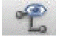
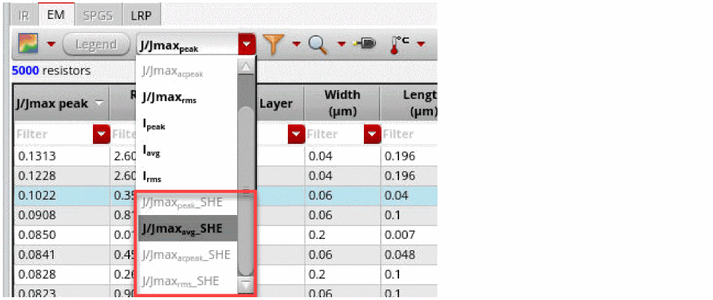
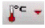
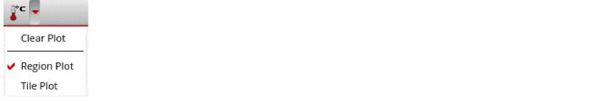
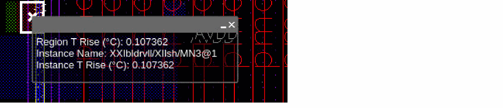
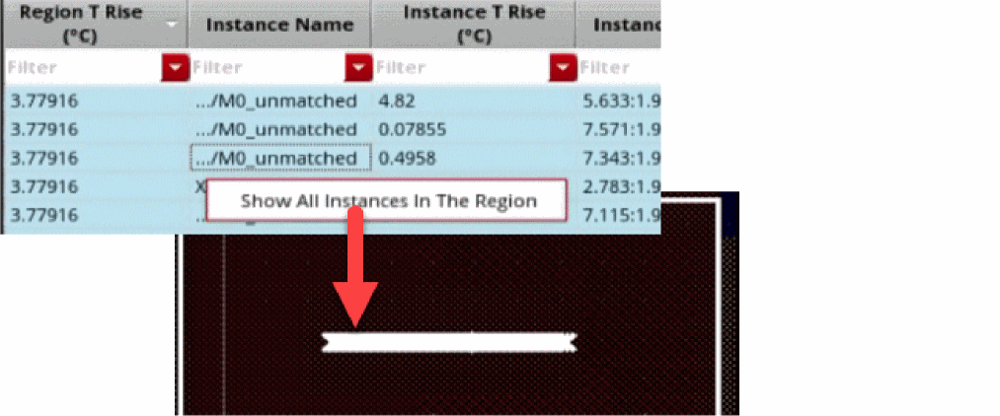
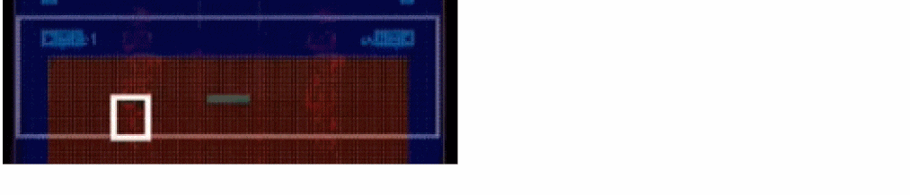

Viewing the Thermal Delta-T Plots
There are two self-heating effect analysis and thermal-aware DC EM analysis plots that are available:
- Thermal-DeltaT Regions - Reports the increase in temperature (deltaT) for all OD layers in the entire design on the Virtuoso layout. This plot provides a detailed view of the temperature variations on the design.
- Thermal-DeltaT Tiles - Reports the increase in temperature (deltaT) per tile based on the number of tiles, specified in the Setup – Electromigration Tab of the Voltus-XFi UI. For this plot, you can specify the dimensions for the tiles in the Tiles field. The design in the layout is divided into sections based on the number of tiles that are specified, for example, 15x20. The default is 10x10.
You can view the thermal delta-T plot for a net using the Voltus-XFi Results Browser assistant. Perform the following steps after loading the analysis results:
- Select a net for which you want to view the thermal data in the Net Summary (top) section and click Load Nets. .
-
In the EM tab, select an SHE plot type from the EM plots drop-down list.
 -
Click Thermal Plots
to enable the display of thermal data.
The thermal data will be displayed in a new table below the EM table. -
Select the plot type by clicking on either the Region Plot or Tile Plot option from the Thermal Plots drop-down list. The Region Plot is selected by default.
-
For the region plot, the table shows the following columns: Region T Rise, Instance Name, Instance T Rise, Instance Location, Region, and Region ID. On selecting an instance in the table, the instance location will be displayed as a cross mark (X) and the region around it will be highlighted, as shown below.
You can right-click a row in the thermal data table and click Show All Instances in the Region option. All the instances of the specific OD region will be displayed, as shown below.
 -
For the tile plot, the table shows the following columns: Region T Rise, Tile Row Number, Tile Column Number, and Region. On selecting a row in the table, the tile will be highlighted, as shown below.

-
For the region plot, the table shows the following columns: Region T Rise, Instance Name, Instance T Rise, Instance Location, Region, and Region ID. On selecting an instance in the table, the instance location will be displayed as a cross mark (X) and the region around it will be highlighted, as shown below.
Related Topics
- Viewing Detailed Electromigration Information
- Visualizing EM-IR Analysis Results using Voltus-XFi Results Browser
- Querying Specific Areas and Shapes in the Layout for Node/Resistor Information
Return to top